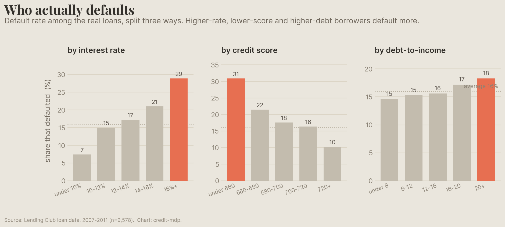
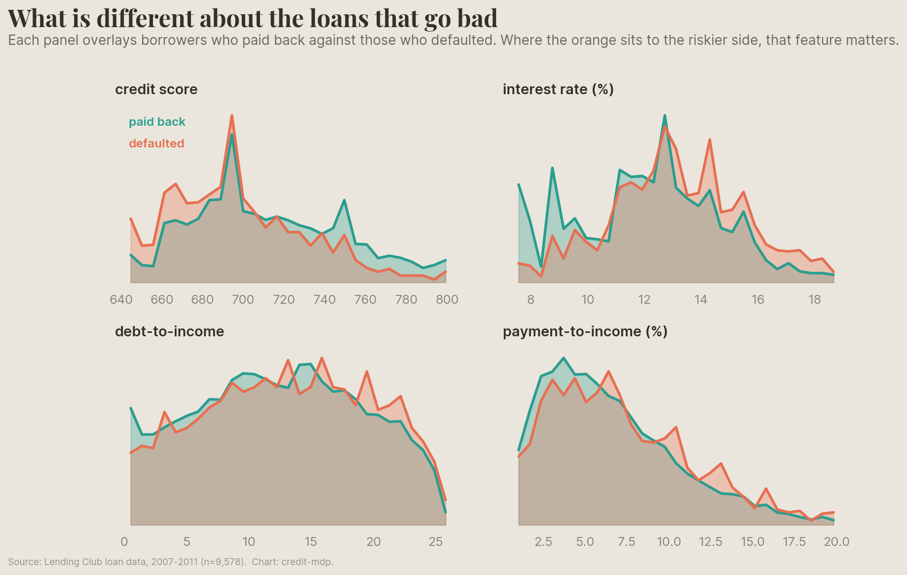
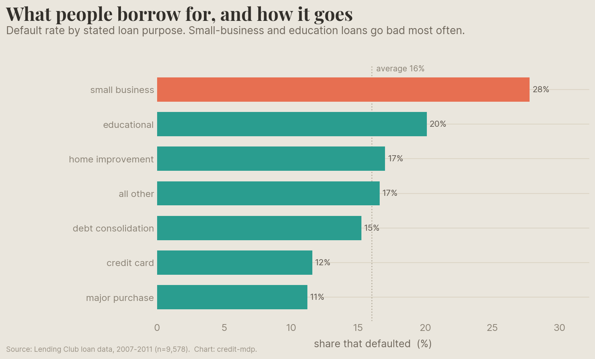
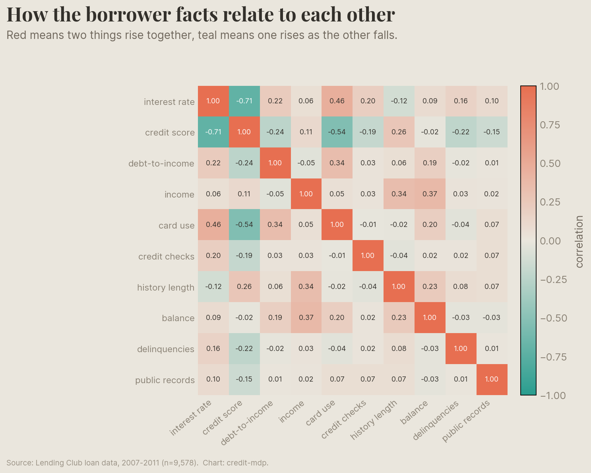
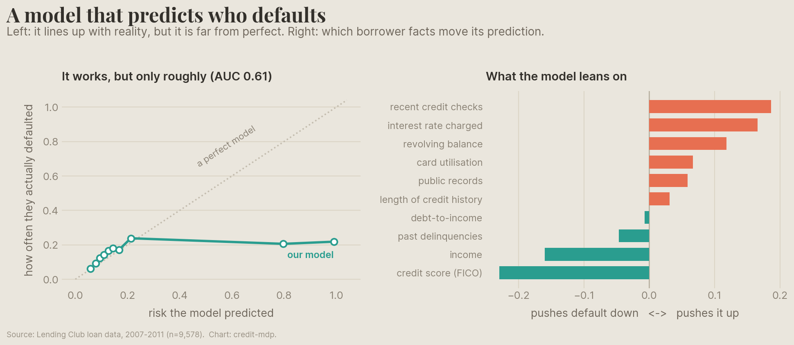
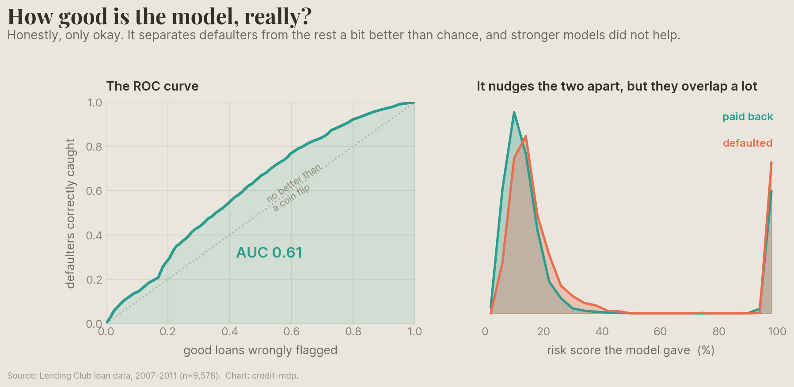

Before a bank can make a smart lending decision, it needs to guess how risky each borrower is. So that is where this starts. Using thousands of real loans that have all finished, we look at who actually fell behind, and then build a simple model to predict it.
This is the groundwork. It is the ordinary "predict who defaults" step that almost every lender does. Part 2 picks up where it ends and asks the harder question: once you can predict risk, what should the bank actually do about it?
We use 9,578 Lending Club loans from 2007 to 2011. The useful thing is that every one has finished, so we know whether it was paid back or charged off. That lets us look back and ask what the borrowers who defaulted had in common. About one in six of these loans went bad.
The clearest signals are the obvious ones, and the data backs them up. Borrowers charged a higher interest rate, with a lower credit score, or carrying more debt relative to income, default more often. The orange bars are the riskiest groups.

Default rate by interest rate
| Group | Default rate |
|---|---|
| under 10% | 7% |
| 10-12% | 15% |
| 12-14% | 17% |
| 14-16% | 21% |
| 16%+ | 29% |
Default rate by credit score
| Group | Default rate |
|---|---|
| under 660 | 31% |
| 660-680 | 22% |
| 680-700 | 18% |
| 700-720 | 16% |
| 720+ | 10% |
Default rate by debt-to-income
| Group | Default rate |
|---|---|
| under 8 | 15% |
| 8-12 | 15% |
| 12-16 | 16% |
| 16-20 | 17% |
| 20+ | 18% |
Every bar on the chart. Overall default rate 16% across 9,578 loans.
Another way to look at it: line up the borrowers who paid back against the ones who defaulted, feature by feature. The interest rate and the credit score pull the two groups apart the most. Debt and payment burden barely separate them at all.

| Feature | Typical: paid back | Typical: defaulted |
|---|---|---|
| credit score | 707.0 | 692.0 |
| interest rate (%) | 12.2 | 13.2 |
| debt-to-income | 12.5 | 13.3 |
| payment-to-income (%) | 5.8 | 6.5 |
The median borrower in each group. Bigger gaps mean the feature separates the two outcomes more.
The reason someone takes a loan says something about how it will go. Loans for a small business or for education go bad far more often than loans to pay off a credit card or make a big purchase.

| Loan purpose | Default rate | Number of loans |
|---|---|---|
| small business | 28% | 619 |
| educational | 20% | 343 |
| home improvement | 17% | 629 |
| all other | 17% | 2,331 |
| debt consolidation | 15% | 3,957 |
| credit card | 12% | 1,262 |
| major purchase | 11% | 437 |
Default rate by stated purpose. Overall 16%.
The facts about a borrower are tangled together. A higher interest rate goes with a lower credit score, because the lender already charges riskier borrowers more. That tangle is part of why no single number predicts default well.

How strongly each fact links to defaulting
| Borrower fact | Link to defaulting |
|---|---|
| interest rate | +0.160 |
| credit score | -0.150 |
| credit checks | +0.149 |
| card use | +0.082 |
| balance | +0.054 |
| public records | +0.049 |
| debt-to-income | +0.037 |
| income | -0.033 |
| history length | -0.029 |
| delinquencies | +0.009 |
The full table of relationships
| fact | interest rate | credit score | debt-to-income | income | card use | credit checks | history length | balance | delinquencies | public records |
|---|---|---|---|---|---|---|---|---|---|---|
| interest rate | +1.00 | -0.71 | +0.22 | +0.06 | +0.46 | +0.20 | -0.12 | +0.09 | +0.16 | +0.10 |
| credit score | -0.71 | +1.00 | -0.24 | +0.11 | -0.54 | -0.19 | +0.26 | -0.02 | -0.22 | -0.15 |
| debt-to-income | +0.22 | -0.24 | +1.00 | -0.05 | +0.34 | +0.03 | +0.06 | +0.19 | -0.02 | +0.01 |
| income | +0.06 | +0.11 | -0.05 | +1.00 | +0.05 | +0.03 | +0.34 | +0.37 | +0.03 | +0.02 |
| card use | +0.46 | -0.54 | +0.34 | +0.05 | +1.00 | -0.01 | -0.02 | +0.20 | -0.04 | +0.07 |
| credit checks | +0.20 | -0.19 | +0.03 | +0.03 | -0.01 | +1.00 | -0.04 | +0.02 | +0.02 | +0.07 |
| history length | -0.12 | +0.26 | +0.06 | +0.34 | -0.02 | -0.04 | +1.00 | +0.23 | +0.08 | +0.07 |
| balance | +0.09 | -0.02 | +0.19 | +0.37 | +0.20 | +0.02 | +0.23 | +1.00 | -0.03 | -0.03 |
| delinquencies | +0.16 | -0.22 | -0.02 | +0.03 | -0.04 | +0.02 | +0.08 | -0.03 | +1.00 | +0.01 |
| public records | +0.10 | -0.15 | +0.01 | +0.02 | +0.07 | +0.07 | +0.07 | -0.03 | +0.01 | +1.00 |
All the links to defaulting are weak, which is exactly why predicting it is hard.
We put all of these signals into one simple model that gives each borrower a risk score. It lines up with reality, but it is far from perfect, which is honest and normal for this kind of data. The credit score and income pull predicted risk down, while recent credit checks and a high interest rate push it up.

What the model leans on
| Borrower fact | Effect on predicted risk (+ raises, - lowers) |
|---|---|
| recent credit checks | +0.19 |
| interest rate charged | +0.17 |
| revolving balance | +0.12 |
| card utilisation | +0.07 |
| public records | +0.06 |
| length of credit history | +0.03 |
| debt-to-income | -0.01 |
| past delinquencies | -0.05 |
| income | -0.16 |
| credit score (FICO) | -0.23 |
How well it is calibrated
| Risk the model predicted | How often they defaulted |
|---|---|
| 6% | 6% |
| 8% | 9% |
| 9% | 12% |
| 11% | 14% |
| 13% | 17% |
| 14% | 18% |
| 17% | 17% |
| 21% | 24% |
| 80% | 21% |
| 99% | 22% |
Standardised effects, so they are comparable. Model AUC = 0.61.
Honestly, only okay. It catches defaulters a bit better than a coin flip, and the two groups of borrowers overlap a lot. We tried stronger models and more features, and this data tops out around the same place. That low ceiling is the real point. If prediction can only get you so far, then being smart about the decision matters more, and that is Part 2.

| Good loans wrongly flagged | Defaulters caught |
|---|---|
| 11% | 15% |
| 20% | 28% |
| 30% | 44% |
| 50% | 67% |
A few points along the ROC curve. AUC = 0.61 (0.5 is a coin flip, 1.0 is perfect).
A risk score tells you who is likely to default. It does not tell you what to do about it. What rate should the bank charge? Who should it approve? How does it balance profit against losses, against fairness, when the money runs out and the loans come in month after month?
And there is a twist the prediction step quietly misses: the rate the bank charges does not just measure risk, it changes it. That feedback, and the decision problem built on top of this model, is Part 2.
The decision problem on top of this exact model and data: the feedback loop, four competing goals, and whether the clever approach actually helps.
Read Part 2 →